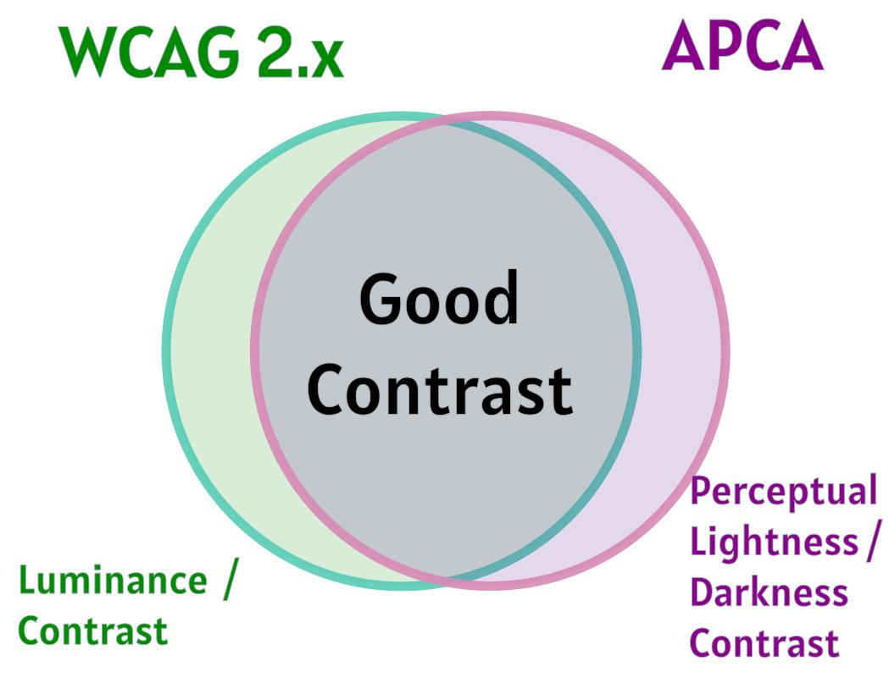

By Mike Gifford & Mitchell Evan
The WCAG 2.x contrast ratio formula — (L1 + 0.05) / (L2 + 0.05) — has served us well. It’s been a practical and widely adopted benchmark for ensuring text readability on the web. But the accessibility community has long acknowledged its limitations. It reflects an older, luminance-based understanding of color contrast and doesn’t always match how people actually perceive color — and more importantly, how users with disabilities experience content.
Mitchell Evan posed an important question to me about if we could use clauses of Section 508 and/or the European Accessibility Act (EAA) to provide better accessibility, while maintaining compliance. Section 508 includes a provision for Equivalent Facilitation, and this is echoed in the European Accessibility Act (EAA). Although this equivalency clause is not included in WCAG, but perhaps it should.
The Contrast Ratio: Still Useful and Imperfect
Let’s be clear: the WCAG contrast ratio has advanced accessibility by providing a measurable, testable floor. WCAG 2.0 chose a contrast ratio of 4.5:1 was an approximation of the loss in contrast sensitivity that some people with 20/40 vision experience. However, the method taken was reductionistic. It doesn’t consider:
- Finer gradations of font size
- Any form of color blindness
- Polarity (dark text on light vs. light on dark)
- Human perceptual bias
It also fails to address user preferences — such as individuals who require or prefer lower contrast. These use cases are poorly served by rigid thresholds based on the luminance of foreground/background colors. Perception is more complicated than it appears.
Today’s technology can express a much richer visual range than when WCAG 2.0 came out in 2008. CSS now supports new color spaces beyond Red Green Blue (RGB) which allow for more nuanced definitions. New formats include:
- Hue, Saturation, and Lightness (HSL),
- Hue, Whiteness, Blackness (HWB),
- Luminance, Chroma, and Hue (LCH), and
- Oklab color space’s OKLCH.
Increasingly, we are seeing more dynamic color manipulation used on the web, which challenges current evaluation methods. As web color definitions have evolved; the model has not.
There is, unfortunately, a gap where WCAG 2 forbids some more readable color combinations and allows some less readable ones. It is that gap is where professional judgment becomes critical.
Accessibility that stops at compliance misses the point. The goal is not to simply pass a model’s threshold, but to deliver the best possible experience. The best experience may require a different approach to solve user challenges more effectively.
Enter APCA: An Already Useful Model
A model of perception which is growing in popularity is generally known just as APCA. Myndex produced both the Advanced Perceptual Contrast Algorithm (APCA™)’s and the Accessible Readability Criterion (ARC™) in an effort to improve readability. Within the APCA model, the closest equivalent to the WCAG 2 ratio of 4.5:1 is ARC Bronze.
The APCA model provides an alternative approach based on a more complex understanding of how people actually perceive contrast. It adjusts for text size and polarity and can offer assessments of readability which are more meaningful. APCA is being discussed for possible inclusion in WCAG 3.0, but that process is far from final.
APCA is already useful today. It can be applied alongside the WCAG 2 contrast ratio as an additional check, to help choose color combinations that are best for human perception.
We advocate for using APCA alongside WCAG 2.x to build typography systems with stronger, more consistent readability — while still meeting current accessibility requirements. This would guarantee the best experience for users. Most color and size combinations that work for one will work for the other. Where they diverge, the APCA may highlight more readable alternatives. In certain regulated contexts, a combination that fails WCAG may still be valid if you can show that it improves readability under the principle of equivalent facilitation.
To explore the differences between APCA and WCAG 2, Mike has produced a script which allows for several comparisons. With 16,777,216 possible variations of the RGB color scheme, it isn’t easy to manually determine which are indeed easier to read, over even how big the overlap is between the two models of perception.
Are you aware of color combinations where WCAG 2 will give better contrast than APCA? If so, please let us know.

Equivalent Facilitation: A Regulatory Foundation
Section 508 explicitly permits Equivalent Facilitation:
“The use of an alternative design or technology that results in substantially equivalent or greater accessibility and usability by individuals with disabilities than would be provided by conformance…”
This clause allows agencies and vendors to meet the intent of the standard — even when deviating from its letter — as long as the result delivers equal or better accessibility.
The European Accessibility Act (EAA) uses different language, but the principle is identical:
“…if and only if […] it determines that the design and production of products and the provision of services results in equivalent or increased accessibility for the foreseeable use by persons with disabilities.”
Choosing to use the WCAG 2.x model to select your color scheme is will ensure compliance today. You could argue today to use Equivalent Facilitation, and use a color combination that meets APCA, but not WCAG 2.x today. Professional expertise will be critical if we are to ignore the 4.5:1 ratio on the grounds of better accessibility. Choosing to relyon the newer APCA will require careful justification and documentation. As non-lawyers, we would say the language allows for itin the USA and Europe. We would like to acknowledge Eric Eggert’s recommendations. We don’t currently recommend meeting APCA, but not WCAG 2.x. Regulated agencies, in particular, should strive for both.
The Right Question: Which Model Is Best?
Depending on the color combinations, WCAG 2 or APCA may provide better contrast. Sites like Shimanta’s Color Contrast Tool are starting to provide both. A foreground / background combination that supports both may be as good as we can get in 2025.
This approach takes some color combinations off the table. Until, there is clear guidance on this, this is the most prudent path. This would also allow for the combinations to be future compatible, if APCA is introduced in WCAG 3. We look forward to what others in the accessibility profession have to say about leveraging “equivalent facilitation” of EN 301 549 and Section 508.
Standards define the floor. But we should be aiming for the ceiling. Choosing between valid models will help delivers better clarity, and it should be an essential part of modern accessibility practice.
Conclusion
We are not bound to outdated models, but to better outcomes.
We should not serve the standard, but rather serve the user.
All models are wrong, but some are useful. Our responsibility is to know which ones are useful, when — and why.
Furthermore, getting together with colleagues over dinner is always fun, but can also produce some very interesting results.
References